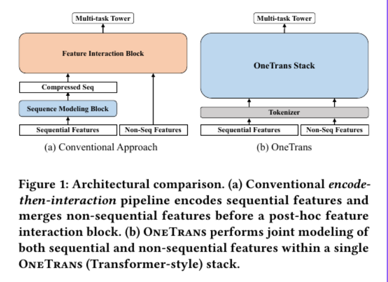
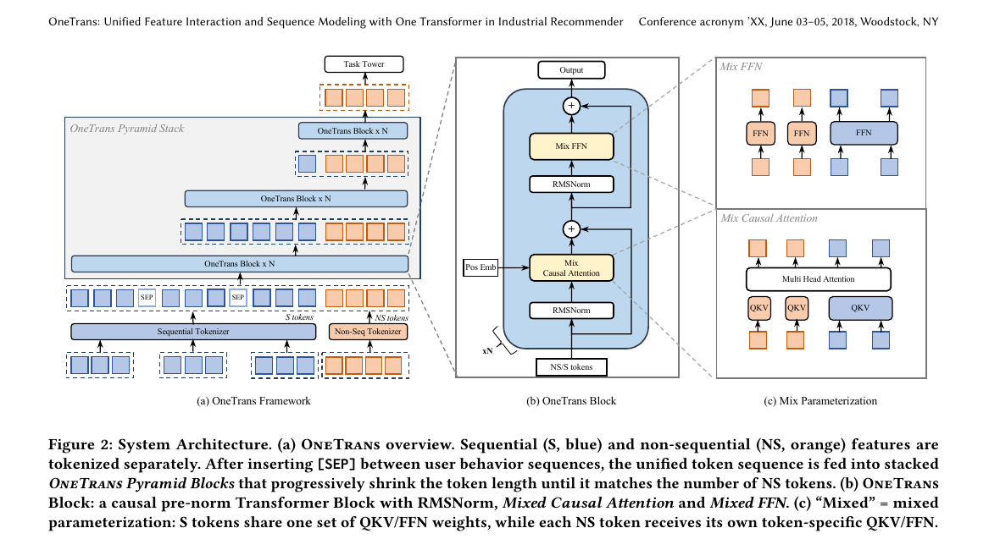
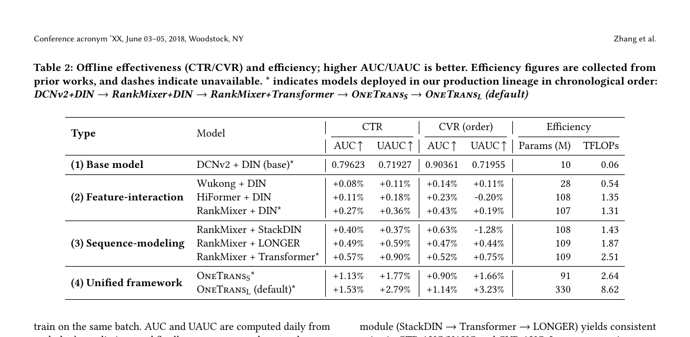
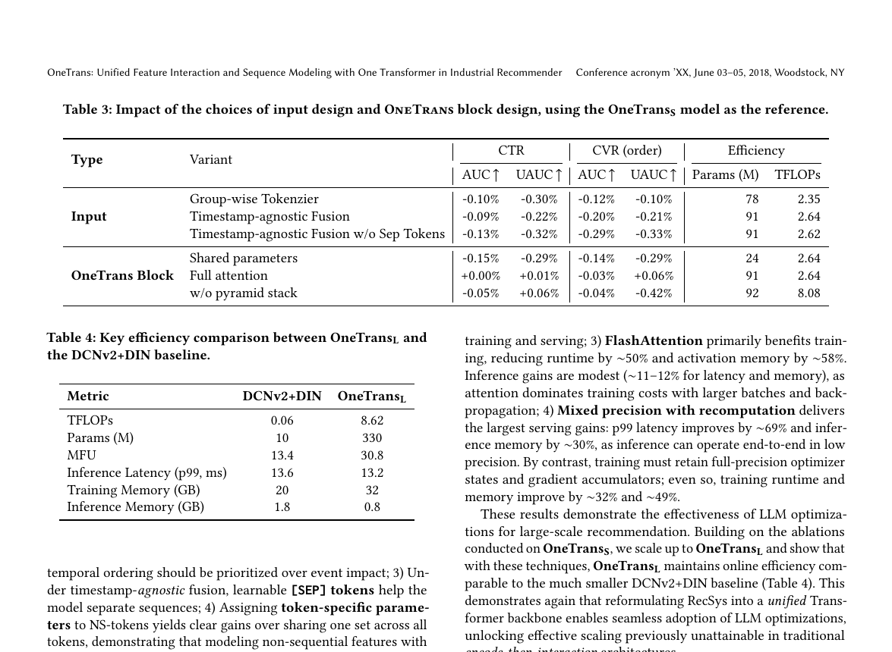
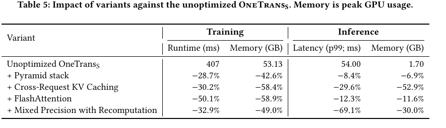
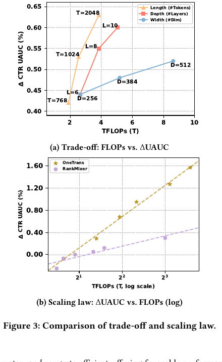
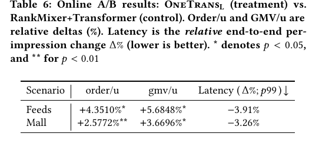

OneTrans
1. 基本信息
- 标题：OneTrans: Unified Feature Interaction and Sequence Modeling with One Transformer in Industrial Recommender
- 作者：Zhaoqi Zhang, Haolei Pei, Jun Guo, Tianyu Wang, Yufei Feng, Hui Sun, Shaowei Liu, Aixin Sun
- 机构：ByteDance，Nanyang Technological University
- 时间：2025-10-30（arXiv v1）
- 链接：https://arxiv.org/abs/2510.26104
- 关键词：Recommender System、Ranking Model、Unified Transformer、Sequence Modeling、Feature Interaction、Scaling Laws
- pdf位置：
C:\Users\chaol\Desktop\推荐论文阅读\scaling\OneTrans.pdf - 笔记位置：
论文笔记/精排/模型扩展/OneTrans.md - 分类：精排 / 模型扩展
1.1 相关论文
- RankMixer：这篇的 feature-interaction 前置工作之一；OneTrans 明确把这条非序列交互路线并入统一 backbone。
- LONGER：这篇的长行为序列建模和 KV caching 前置工作；OneTrans 把 LONGER 的系统优化路线并入 sequence + feature interaction 的统一 backbone。
- HyFormer：后续同主题工作，也在反对
encode-then-interaction，但走的是 query-centric 的层间交替路线，而不是 OneTrans 的单流 causal backbone。
2. 一句话总结
这篇论文想解决的核心问题是：工业推荐排序里，序列建模模块和特征交互模块长期沿着两条线各自扩展，导致信息流被人为切断，也很难像 LLM 一样统一做系统优化。OneTrans 的答案是把 sequential features 和 non-sequential features 全部放进一个因果 Transformer backbone 里，用统一 tokenizer、mixed parameterization、pyramid token shrinking 和 cross-request KV caching，把“序列建模 + 特征交互 + 工程优化”一起统一起来。
3. 论文在解决什么问题
3.1 背景
工业推荐排序一般还是 encode-then-interaction 范式：
- 先用 DIN、Transformer、LONGER 之类的模块把用户行为序列编码出来。
- 再把压缩后的序列表示与 user / item / context 等非序列特征拼起来，送进 DCN、Wukong、RankMixer 一类特征交互模块。
这个范式能持续涨点，但作者认为它有两个结构性问题：
- 信息流是单向的：非序列特征通常只能在序列编码之后再参与，难以反向影响 sequence representation。
- 架构碎片化：序列模块和交互模块各自独立，训练和部署很难复用 Transformer/LLM 侧已经成熟的优化手段，比如 KV caching、FlashAttention、mixed precision。
作者真正想做的不是“再堆一个更强的序列编码器”或者“再堆一个更强的交互模块”，而是把二者合成一套单栈 backbone。
3.2 Figure 1：从“两段式流水线”改成“单栈统一建模”

Figure 1 给了论文最直白的对比：
- 传统方案：先 sequence modeling，再 feature interaction，本质是串行两阶段。
- OneTrans：先把 sequential 和 non-sequential 特征全部 token 化，再直接丢进同一个 OneTrans stack。
这张图想传达的重点不是“把模块画在一起”，而是：
- 序列 token 和非序列 token 从第一层开始就发生交互；
- 模型扩展的单位不再是“某个子模块”，而是整个 backbone 的 depth / width / length；
- 训练和部署也因此可以统一接入 Transformer 风格优化。
4. 方法总览
4.1 Figure 2：统一 tokenizer + OneTrans block + mixed parameterization

Figure 2 是整篇论文最关键的设计图，必须拆开看：
-
Figure 2(a) OneTrans Framework 这部分展示了整体数据流。论文把 sequential features 和 non-sequential features 先分开 tokenization，再在多条行为序列之间插入
[SEP]，随后把它们拼成一条统一 token 序列，送入OneTrans Pyramid Stack。随着层数加深，sequence token 会被逐步裁剪，最后留下与 NS token 数接近的一小段尾部 token 去承接高阶信息。 -
Figure 2(b) OneTrans Block 单层 block 仍然是典型 pre-norm Transformer 结构，但里面的两个核心算子都换成了混合版本：
Mixed Causal Attention和Mixed FFN。也就是说，OneTrans 不是完全重写 Transformer，而是在 Transformer 外壳里，替换成更适合推荐场景的参数组织方式。 -
Figure 2(c) Mix Parameterization 这部分最重要。作者认为 sequential tokens 语义来源更同质，所以共享一套 Q/K/V 和 FFN 参数；而 non-sequential tokens 来自 user/item/context 等不同特征域，异质性更强，因此每个 NS token 都拥有 token-specific 的 Q/K/V 与 FFN。换句话说，OneTrans 的核心不是“统一 token 后一视同仁”，而是“统一 backbone，但保留 token 类型差异”。
4.2 OneTrans 的输入组织方式
OneTrans 的第一步是把原始特征拆成两类：
-
Non-Sequential Features 包括数值特征和类别特征。论文给了两种 tokenizer：
Group-wise Tokenizer：按语义手工分组，每组单独过 MLP。Auto-Split Tokenizer：先把所有非序列特征拼起来过一个大 MLP，再切成多个 token。
实验最后默认使用
Auto-Split。我的理解是，它牺牲了一点人工先验，但换来了更低的 kernel launch 开销和更整齐的 GPU 计算形态。 -
Sequential Features 每条行为序列先各自投影到统一维度，再做融合。论文给了两种融合方式：
timestamp-aware：按时间交错排列多条行为序列；timestamp-agnostic：按行为强度排序，例如 purchase → add-to-cart → click，再用[SEP]分隔不同序列。
从消融看，只要时间戳可用，
timestamp-aware更优。
5. 核心机制
5.1 Mixed Causal Attention：统一交互，但不给所有 token 用同一套参数
OneTrans 的注意力结构和普通 causal Transformer 只有一个关键差别：Q/K/V 的参数化方式不一样。
- 对所有 S-tokens：共享同一套 Q/K/V
- 对每个 NS-token：分别使用 token-specific Q/K/V
这个设计背后的判断很清晰：
- 用户行为序列里的 token 来自同类行为流，参数共享是合理的。
- 用户画像、候选 item、上下文等非序列 token 语义差别很大，强行共享参数会损伤区分能力。
在信息流上，causal mask 还带来三个效果：
S -> S：行为序列仍按因果顺序建模。NS -> 全部 S：每个 NS token 都能看到完整行为历史，相当于直接对序列做 target-aware 聚合。NS -> 之前的 NS：非序列 token 之间也能形成顺序上的逐层交互。
这意味着 OneTrans 并不是简单把 sequence encoder 塞进 Transformer，而是让 NS token 从第一层开始就在“读行为历史 + 和其他 NS token 交互”。
5.2 Mixed FFN：统一 block 内继续保留异构性
FFN 也采用同样思路：
- S-tokens 共享一套 FFN
- NS-tokens 各自拥有 token-specific FFN
我觉得这一步很像把 RankMixer 里的 per-token FFN 迁移进统一 Transformer backbone。它让模型不会因为“统一建模”就把所有非序列 token 压成同质信号。
5.3 Pyramid Stack：越往后层，越只保留尾部查询
OneTrans 没有在每层都保留完整长序列，而是使用 pyramid schedule：
- 每层只让最近的一部分 S-tokens 发出 query；
- key/value 仍然来自全序列；
- 当前层输出后只保留这一小段尾部 token，序列长度逐层缩短。
论文给出的两个理由都很实用：
- progressive distillation：长历史的信息会持续向尾部 token 和 NS tokens 浓缩。
- compute efficiency：attention 复杂度从处理全长 query，变成只处理尾部 query，FLOPs 和 activation memory 都更省。
这个设计很关键，因为 OneTrans 的统一建模如果没有 pyramid，很容易被长行为序列的成本拖垮。
5.4 Cross-request KV caching：把推荐请求结构真正用起来
论文的另一个很强的工程点是 cross-request KV caching。
在工业推荐里，同一个 request 下不同 candidate 通常共享同一份用户历史，所以：
-
Stage I, per request 先只处理用户侧 S-tokens，把 K/V 和 attention outputs 缓存起来。
-
Stage II, per candidate 每个候选 item 只需要计算自己的 NS-tokens，再去 cross-attend 已缓存的 S-side K/V。
这样做后，同一请求内的大量候选就不需要重复编码用户历史。论文还进一步利用“用户行为序列是 append-only”的特点，把缓存扩展到跨请求场景，只增量计算新加入的行为，因此把序列侧计算从 O(L) 降到 O(ΔL)。
5.5 为什么 OneTrans 像 LLM，但又不是直接照搬 LLM
作者一方面明显在借鉴 LLM：
- 单栈 Transformer backbone
- KV caching
- FlashAttention-2
- mixed precision + activation recomputation
但另一方面又没有硬套“所有 token 同构”的假设。OneTrans 最关键的 customized 部分就是 mixed parameterization。我的理解是，这篇论文真正的价值就在于：把 LLM 的统一骨干和推荐系统的异构输入结构拼接起来，而不是照搬标准 Transformer。
6. 实验与结果
6.1 实验设置
离线实验来自真实工业排序数据：
- 29.1B impressions
- 27.9M users
- 10.2M items
- 日均 118.2M impressions
- 日均 2.3M active users
任务同时评估 CTR 和 CVR，指标是 AUC / UAUC；效率则报告 dense params 和训练 TFLOPs。
6.2 主结果：统一架构优于“分别把两个模块做强”

Table 2 里最重要的信息是，OneTrans 不是只比某一个 baseline 强，而是比两条传统扩展路线都更强：
- 只强化 feature interaction：
Wukong + DIN、HiFormer + DIN、RankMixer + DIN 都能涨，但上限有限。 - 只强化 sequence modeling：RankMixer + StackDIN、RankMixer + LONGER、RankMixer + Transformer 也能涨，但仍然是模块分离。
- 统一框架：
OneTrans_S：CTR+1.13% / +1.77%，CVR+0.90% / +1.66%OneTrans_L：CTR+1.53% / +2.79%，CVR+1.14% / +3.23%
尤其值得记的是，OneTrans_S 在参数规模并不夸张的前提下，就已经明显超过 RankMixer + Transformer；继续放大到 OneTrans_L 后，收益还在稳定增长。这说明统一建模不是“把模块合并一下”，而是真的改变了模型的 scaling 方式。
6.3 消融：哪些设计是真的关键

Table 3 基本把论文的主张钉死了：
-
Auto-Split tokenizer 优于 Group-wise tokenizer 说明让模型自动形成 NS token 划分，比手工分组更适合这套统一骨干。
-
timestamp-aware 融合优于 timestamp-agnostic 说明多行为序列里，真实时间顺序比“按行为强弱排序”更重要。
-
去掉
[SEP]会继续掉点 即便在 timestamp-agnostic 模式下，模型也需要序列边界信号。 -
把 mixed parameterization 改成 shared parameters 掉点明显 这是最关键的一项。只共享一套参数会损伤 NS token 的异质性表达。
-
full attention 和 causal attention 几乎持平 从效果看，未来信息不是必要的；但 full attention 不能做 KV caching，所以工程上仍然 causal 更优。
-
去掉 pyramid stack 后 FLOPs 从 2.64T 增到 8.08T，但效果几乎没收益 这说明 pyramid 不是小技巧，而是统一长序列建模能成立的关键。
Table 4 进一步说明了系统侧收益：虽然 OneTrans_L 达到 330M 参数、8.62 TFLOPs，但 p99 latency 仍与 DCNv2 + DIN 基线相当，甚至略低，推理显存也更小。
6.4 系统优化：OneTrans 真正吃到了 LLM 工程红利

Table 5 总结了各项系统优化对未优化版 OneTrans_S 的收益：
-
Pyramid stack 训练 runtime
-28.7%，训练显存-42.6%，推理 p99-8.4% -
Cross-request KV caching 训练 runtime
-30.2%，训练显存-58.4%，推理 p99-29.6% -
FlashAttention 训练 runtime
-50.1%，训练显存-58.9% -
Mixed precision + recomputation 推理 p99
-69.1%，推理显存-30.0%
这里很有启发的一点是：OneTrans 的 unified formulation 不是只是让论文更“优雅”，而是让这些在 LLM 里已经成熟的优化手段可以原封不动地迁移过来。
6.5 Figure 3：统一框架的 scaling law 更陡

Figure 3 分两部分：
-
Figure 3(a) trade-off 当 length、depth、width 增大时，效果都会涨，但 length 带来的增益最大；depth 通常比 width 更能提高性能，不过也会引入更强的串行计算。
-
Figure 3(b) scaling law 把
ΔUAUC对训练 FLOPs 画到 log 坐标后，OneTrans 的曲线比 RankMixer + Transformer 更陡。这说明随着算力预算增加，OneTrans 更能把额外 FLOPs 兑现成效果收益。
这张图是论文很关键的证据，因为它支持的不是“某个固定配置更好”，而是“统一设计更适合继续 scale”。
6.6 在线 A/B：不仅离线更强，业务指标也涨

在线对比的 control 是 RankMixer + Transformer，treatment 是 OneTrans_L。结果很直接：
-
Feeds
- order/u
+4.3510% - gmv/u
+5.6848% - latency
-3.91%
- order/u
-
Mall
- order/u
+2.5772% - gmv/u
+3.6696% - latency
-3.26%
- order/u
论文还补充提到：
Active Days +0.7478%- cold-start product
order/u +13.59%
这说明 OneTrans 不只是离线指标更漂亮，而是真的在强业务指标上兑现了统一框架的收益。
7. 我的理解与局限
7.1 它本质上是在重写“序列 token 和非序列 token 的关系”
传统工业推荐里，行为序列更像一个先编码完再输出 summary 的独立模块。OneTrans 则把它改成：
- 序列 token 和 NS token 进入同一个栈；
- NS token 从第一层开始就读取序列；
- 序列中的高阶信息通过 causal attention 和 pyramid 逐层浓缩到尾部 token 与 NS token 中。
所以它重写的不是一个 block，而是信息流范式。
7.2 OneTrans 可以看成 RankMixer 和 LONGER 的统一化延伸
从已有工作关系上看，我觉得可以这样理解：
- RankMixer 提供了“非序列特征也应该 token 化、并保留 token 异质性”的方向。
- LONGER 提供了“长行为序列可以像 Transformer 那样 scale，并受益于 KV caching”的方向。
- OneTrans 则是把这两条线合并进一个统一 backbone。
如果拿后续工作对照看，HyFormer 也在解决同一个高层问题，但它保留了 query 作为中间接口，而不是像 OneTrans 这样把所有 token 直接并入单栈 Transformer。
因此它更像是“统一范式的成立证明”，而不只是一个局部 trick。
7.3 我觉得需要留意的局限
下面这些更多是我的理解，不是论文原文直接声明：
-
统一 backbone 并不等于 token 完全同质 OneTrans 仍然依赖手工区分 S-tokens 和 NS-tokens，并在参数层面做不同处理，所以它的“统一”是计算图统一，不是建模假设完全统一。
-
线上收益高度依赖请求结构 Cross-request KV caching 的价值建立在“同一请求多个 candidate 共享用户侧序列”这一工业事实之上。如果场景结构不同，收益未必一样大。
-
论文主要验证的是字节系排序场景 虽然证据很强，但迁移到别的推荐任务时，最优 tokenizer、token 数和 pyramid schedule 仍然需要重新调。
8. 结论
OneTrans 的核心贡献可以压缩成一句话：把工业推荐里的 sequence modeling 和 feature interaction 从“两段式流水线”改成了“单栈 Transformer 里的联合建模问题”。
如果以后快速回忆这篇论文，我会记住下面 5 个点：
- 统一 token 序列：sequential 和 non-sequential 特征都进同一个 Transformer stack。
- mixed parameterization：S-tokens 共享参数，NS-tokens 使用 token-specific 参数。
- pyramid stack：长序列不是每层全保留，而是逐层只保留尾部 query。
- cross-request KV caching：真正把推荐请求的共享结构转成系统收益。
- scaling law 更陡且线上可落地：离线稳定涨，线上 order/u 与 gmv/u 也明显提升，同时 latency 还下降。